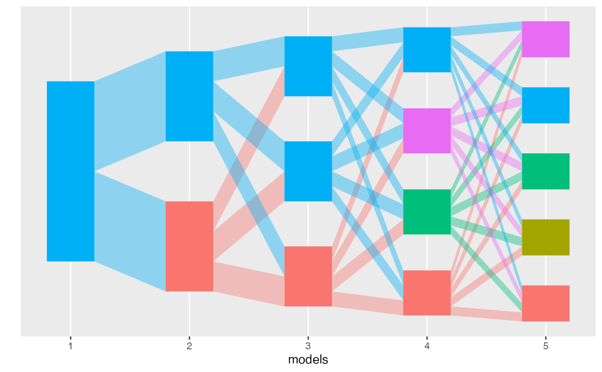

Align topics from distinct LDA models
align_topics.RdThis function takes a list of LDA models and returns an object of class
alignment. Each element in the models list must be itself a named
list, corresponding to the mixed memberships ($gamma) and topics
($beta). The resulting alignment object can be plotted using `plot`
and its weights can be extracted using the `weights` accessor function. See
the documentation for class alignment for further details.
align_topics(models, method = "product", ...)
Arguments
| models | (required) A list of LDA models object. Each list component
must be a list with two named entries, $gamma (containing mixed memberships)
and $beta (containing topic parameters in log sapce). See
|
|---|---|
| method | (required) Either |
| ... | (optional) Further keyword arguments passed to the weight
function. For example, passing |
Value
An object of class alignment providing the weights between
every pair of topics of each model pairs in the input edgelist
(comparisons).
Details
After topics are aligned, they are re-ordered such that topics connected by high weights are ranked similarly within their respective models.
Topic paths (sets of topics connected by high weights across
models) are then identified and alignment diagnostics (topic refinement and
coherence scores) are computed. These variables are included to the
topics container of the returned alignment.
See also
alignment
Examples
library(purrr) data <- rmultinom(10, 20, rep(0.1, 20)) lda_params <- setNames(map(1:5, ~ list(k = .)), 1:5) lda_models <- run_lda_models(data, lda_params)#>#>#>#>#>alignment <- align_topics(lda_models) alignment#> # An alignment: 5 models, 15 topics: #> # A tibble: 6 × 8 #> m m_next k k_next weight document_mass bw_weight fw_weight #> <fct> <fct> <int> <int> <dbl> <dbl> <dbl> <dbl> #> 1 1 2 1 1 0.500 10.0 1 0.500 #> 2 1 2 1 2 0.500 10.0 1 0.500 #> 3 1 3 1 1 0.333 6.67 1 0.333 #> 4 1 3 1 2 0.333 6.67 1 0.333 #> 5 1 3 1 3 0.333 6.67 1 0.333 #> 6 1 4 1 1 0.250 5.00 1 0.250 #> # ... with 79 more rowstopics(alignment)#> # A tibble: 15 × 7 #> m k mass prop path coherence refinement #> <fct> <int> <dbl> <dbl> <fct> <dbl> <dbl> #> 1 1 1 20 1 2 0.321 1 #> 2 2 1 10.0 0.500 2 0.359 0.512 #> 3 2 2 10.0 0.500 4 0.305 0.512 #> 4 3 1 6.67 0.333 2 0.352 0.395 #> 5 3 2 6.67 0.333 4 0.367 0.390 #> 6 3 3 6.67 0.333 5 0.505 0.516 #> 7 4 1 5.00 0.250 1 0.379 0.307 #> 8 4 2 5.00 0.250 2 0.305 0.280 #> 9 4 3 5.00 0.250 4 0.352 0.299 #> 10 4 4 5.00 0.250 5 0.530 0.426 #> 11 5 1 4.00 0.200 1 0.379 1 #> 12 5 2 4.00 0.200 2 0.264 1 #> 13 5 3 4.00 0.200 3 0 1 #> 14 5 4 4.00 0.200 4 0.309 1 #> 15 5 5 4.00 0.200 5 0.459 1#> # A tibble: 85 × 8 #> m m_next k k_next weight document_mass bw_weight fw_weight #> <fct> <fct> <int> <int> <dbl> <dbl> <dbl> <dbl> #> 1 1 2 1 1 0.500 10.0 1 0.500 #> 2 1 2 1 2 0.500 10.0 1 0.500 #> 3 1 3 1 1 0.333 6.67 1 0.333 #> 4 1 3 1 2 0.333 6.67 1 0.333 #> 5 1 3 1 3 0.333 6.67 1 0.333 #> 6 1 4 1 1 0.250 5.00 1 0.250 #> 7 1 4 1 2 0.250 5.00 1 0.250 #> 8 1 4 1 3 0.250 5.00 1 0.250 #> 9 1 4 1 4 0.250 5.00 1 0.250 #> 10 1 5 1 1 0.200 4.00 1 0.200 #> # … with 75 more rowsmodels(alignment)#> $`1` #> $`1`$beta #> [,1] [,2] [,3] [,4] [,5] [,6] [,7] #> [1,] -2.302585 -2.302585 -2.302585 -2.302585 -2.302585 -2.302585 -2.302585 #> [,8] [,9] [,10] #> [1,] -2.302585 -2.302585 -2.302585 #> #> $`1`$gamma #> [,1] #> [1,] 1 #> [2,] 1 #> [3,] 1 #> [4,] 1 #> [5,] 1 #> [6,] 1 #> [7,] 1 #> [8,] 1 #> [9,] 1 #> [10,] 1 #> [11,] 1 #> [12,] 1 #> [13,] 1 #> [14,] 1 #> [15,] 1 #> [16,] 1 #> [17,] 1 #> [18,] 1 #> [19,] 1 #> [20,] 1 #> #> #> $`2` #> $`2`$beta #> [,1] [,2] [,3] [,4] [,5] [,6] [,7] #> [1,] -2.328441 -2.107639 -2.763920 -2.555518 -2.130715 -2.211486 -2.245688 #> [2,] -2.277374 -2.545048 -1.988019 -2.100833 -2.510320 -2.402854 -2.362934 #> [,8] [,9] [,10] #> [1,] -2.690885 -2.092673 -2.162744 #> [2,] -2.023527 -2.568685 -2.465262 #> #> $`2`$gamma #> [,1] [,2] #> [1,] 0.5005853 0.4994147 #> [2,] 0.5014285 0.4985715 #> [3,] 0.4994789 0.5005211 #> [4,] 0.5000226 0.4999774 #> [5,] 0.5003996 0.4996004 #> [6,] 0.5027755 0.4972245 #> [7,] 0.4992833 0.5007167 #> [8,] 0.4986084 0.5013916 #> [9,] 0.4968217 0.5031783 #> [10,] 0.4982707 0.5017293 #> [11,] 0.4995073 0.5004927 #> [12,] 0.4990023 0.5009977 #> [13,] 0.5026788 0.4973212 #> [14,] 0.5001047 0.4998953 #> [15,] 0.5054837 0.4945163 #> [16,] 0.4976997 0.5023003 #> [17,] 0.4993560 0.5006440 #> [18,] 0.4982032 0.5017968 #> [19,] 0.5042217 0.4957783 #> [20,] 0.4961021 0.5038979 #> #> #> $`3` #> $`3`$beta #> [,1] [,2] [,3] [,4] [,5] [,6] [,7] #> [1,] -2.234657 -1.921090 -2.801566 -3.529445 -2.348065 -2.627913 -2.030727 #> [2,] -2.177345 -2.337752 -1.990169 -3.073285 -2.730495 -2.804233 -2.129138 #> [3,] -2.530197 -2.864204 -2.276692 -1.494630 -1.971637 -1.788731 -2.998719 #> [,8] [,9] [,10] #> [1,] -2.481874 -1.804340 -2.213701 #> [2,] -1.719143 -2.266613 -2.530617 #> [3,] -3.290110 -3.448630 -2.197479 #> #> $`3`$gamma #> [,1] [,2] [,3] #> [1,] 0.3359732 0.3362213 0.3278054 #> [2,] 0.3354574 0.3342954 0.3302472 #> [3,] 0.3310113 0.3320366 0.3369521 #> [4,] 0.3328068 0.3321805 0.3350127 #> [5,] 0.3328074 0.3326715 0.3345211 #> [6,] 0.3347166 0.3312112 0.3340722 #> [7,] 0.3327581 0.3342326 0.3330093 #> [8,] 0.3321202 0.3330341 0.3348458 #> [9,] 0.3350034 0.3398979 0.3250986 #> [10,] 0.3318080 0.3325326 0.3356594 #> [11,] 0.3340147 0.3338379 0.3321474 #> [12,] 0.3332897 0.3345587 0.3321516 #> [13,] 0.3341962 0.3314497 0.3343541 #> [14,] 0.3339128 0.3336428 0.3324444 #> [15,] 0.3342854 0.3283712 0.3373434 #> [16,] 0.3324193 0.3359154 0.3316653 #> [17,] 0.3312444 0.3322813 0.3364743 #> [18,] 0.3330749 0.3349415 0.3319836 #> [19,] 0.3371990 0.3326182 0.3301828 #> [20,] 0.3284362 0.3306271 0.3409367 #> #> #> $`4` #> $`4`$beta #> [,1] [,2] [,3] [,4] [,5] [,6] [,7] #> [1,] -1.910606 -2.988448 -3.474442 -2.677596 -2.579631 -2.008273 -2.008543 #> [2,] -2.389561 -1.725046 -2.601510 -3.438946 -2.237895 -2.699361 -2.114849 #> [3,] -2.360927 -2.205841 -1.770438 -3.000993 -2.667675 -2.924332 -2.264460 #> [4,] -2.717067 -2.791633 -2.083163 -1.389217 -1.910269 -1.932355 -3.185534 #> [,8] [,9] [,10] #> [1,] -2.504960 -1.815383 -2.177930 #> [2,] -2.405141 -2.033699 -2.223599 #> [3,] -1.649810 -2.500799 -2.598200 #> [4,] -3.323302 -3.710481 -2.262386 #> #> $`4`$gamma #> [,1] [,2] [,3] [,4] #> [1,] 0.2490177 0.2524299 0.2518870 0.2466654 #> [2,] 0.2524902 0.2502846 0.2497032 0.2475220 #> [3,] 0.2489920 0.2491385 0.2496248 0.2522447 #> [4,] 0.2491293 0.2498970 0.2495041 0.2514696 #> [5,] 0.2498836 0.2497684 0.2497156 0.2506324 #> [6,] 0.2495285 0.2513411 0.2488159 0.2503144 #> [7,] 0.2508091 0.2496604 0.2502775 0.2492529 #> [8,] 0.2497506 0.2490730 0.2500413 0.2511351 #> [9,] 0.2499476 0.2506611 0.2542542 0.2451372 #> [10,] 0.2490351 0.2488287 0.2498542 0.2522820 #> [11,] 0.2502504 0.2500098 0.2502877 0.2494521 #> [12,] 0.2509225 0.2494095 0.2505152 0.2491528 #> [13,] 0.2509981 0.2502100 0.2485383 0.2502536 #> [14,] 0.2508025 0.2501066 0.2498560 0.2492349 #> [15,] 0.2508992 0.2504033 0.2465416 0.2521559 #> [16,] 0.2487854 0.2499930 0.2521980 0.2490236 #> [17,] 0.2493676 0.2491556 0.2496762 0.2518006 #> [18,] 0.2475801 0.2507442 0.2518046 0.2498710 #> [19,] 0.2521283 0.2519409 0.2486324 0.2472983 #> [20,] 0.2496068 0.2468707 0.2482506 0.2552719 #> #> #> $`5` #> $`5`$beta #> [,1] [,2] [,3] [,4] [,5] [,6] [,7] #> [1,] -1.895021 -3.244331 -3.621980 -2.868351 -2.446848 -2.218444 -1.967480 #> [2,] -2.356236 -1.981443 -2.730593 -3.603027 -2.069584 -2.878117 -2.073791 #> [3,] -2.415805 -1.690581 -1.893941 -1.871750 -3.954925 -1.823694 -2.537512 #> [4,] -2.350174 -2.435575 -1.932523 -3.186245 -2.539956 -3.113542 -2.207526 #> [5,] -2.654979 -2.971698 -2.182176 -1.511052 -1.665605 -2.047167 -3.089940 #> [,8] [,9] [,10] #> [1,] -2.400994 -1.652417 -2.209087 #> [2,] -2.289345 -1.846041 -2.229791 #> [3,] -3.296068 -3.669524 -2.304666 #> [4,] -1.469553 -2.348577 -2.628702 #> [5,] -3.194049 -3.518578 -2.201096 #> #> $`5`$gamma #> [,1] [,2] [,3] [,4] [,5] #> [1,] 0.1993754 0.2013025 0.1996703 0.2017727 0.1978790 #> [2,] 0.2021470 0.2007818 0.1981195 0.2002986 0.1986531 #> [3,] 0.1989931 0.1992488 0.2005223 0.1996239 0.2016119 #> [4,] 0.1994298 0.1999407 0.2000157 0.1996270 0.2009868 #> [5,] 0.1998039 0.1998677 0.2000682 0.1996560 0.2006042 #> [6,] 0.1992819 0.2002068 0.2020348 0.1985491 0.1999274 #> [7,] 0.2002360 0.1995419 0.2005711 0.2004497 0.1992013 #> [8,] 0.1997258 0.1993450 0.2008344 0.1996743 0.2004205 #> [9,] 0.2007680 0.2010938 0.1973117 0.2038405 0.1969860 #> [10,] 0.1996560 0.1996296 0.1994194 0.1996091 0.2016859 #> [11,] 0.2003065 0.2000494 0.2004004 0.1997254 0.1995183 #> [12,] 0.2008969 0.2000057 0.1989032 0.2009423 0.1992519 #> [13,] 0.2007370 0.2003815 0.1993481 0.1990557 0.2004777 #> [14,] 0.2005313 0.2000047 0.2002119 0.2000269 0.1992251 #> [15,] 0.2007688 0.2007360 0.1984675 0.1976906 0.2023371 #> [16,] 0.1990036 0.1997320 0.2004847 0.2016426 0.1991371 #> [17,] 0.1991529 0.1991213 0.2010839 0.1995782 0.2010639 #> [18,] 0.1982500 0.2000810 0.2009504 0.2009310 0.1997877 #> [19,] 0.2014883 0.2011527 0.1999972 0.1989201 0.1984418 #> [20,] 0.1994026 0.1977106 0.2015997 0.1984015 0.2028856 #> #>